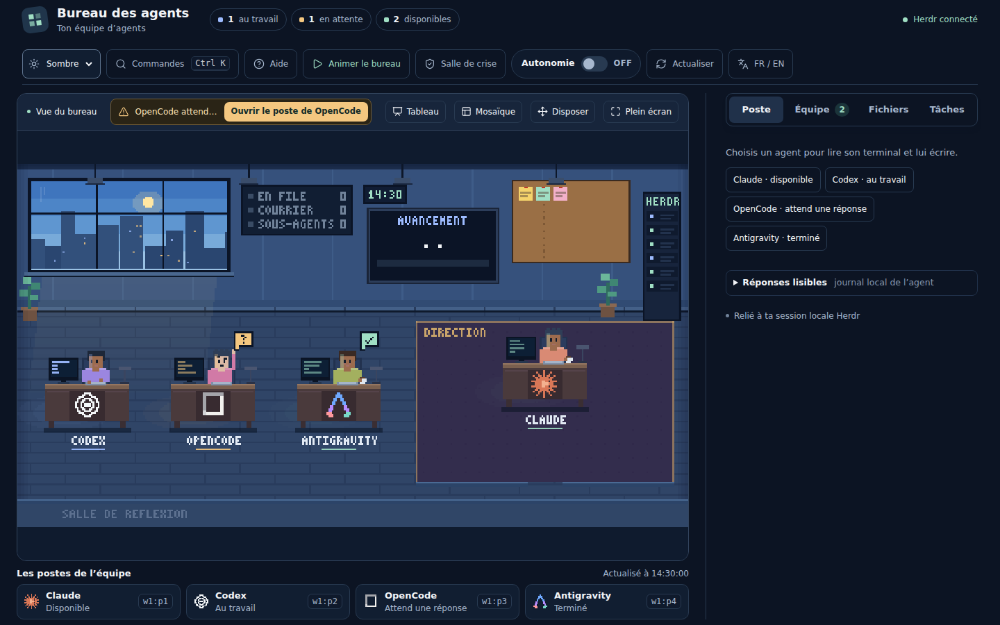
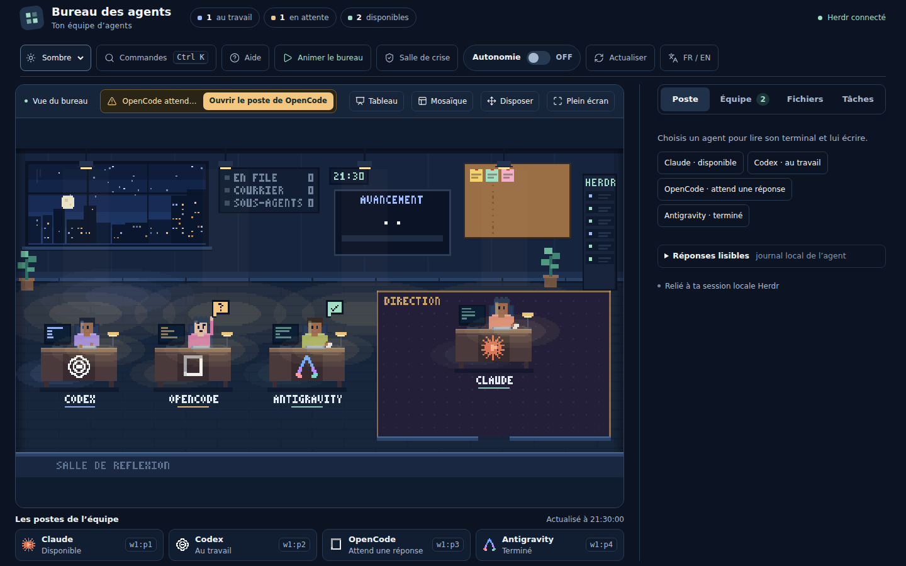
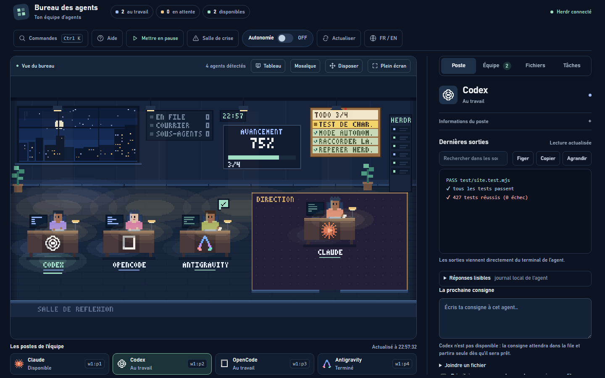
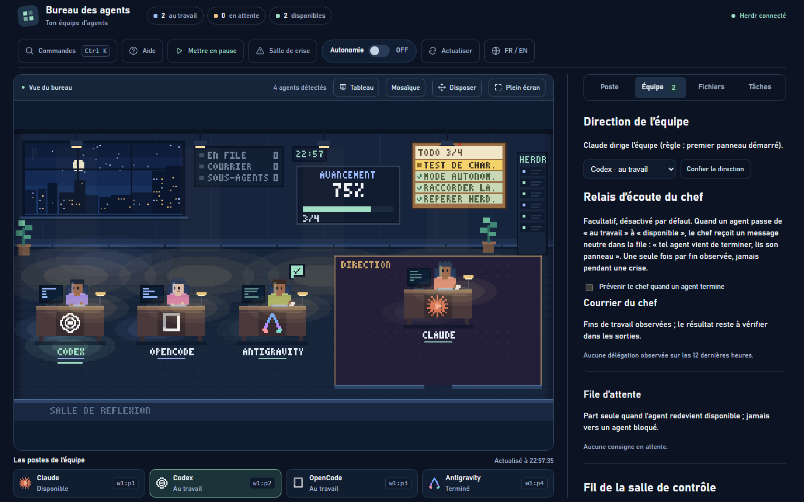
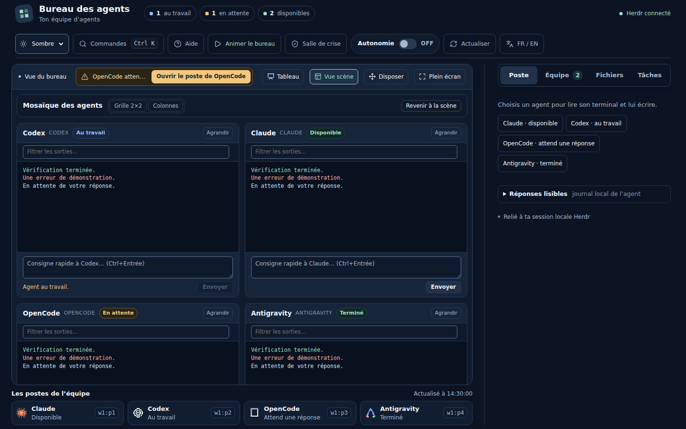
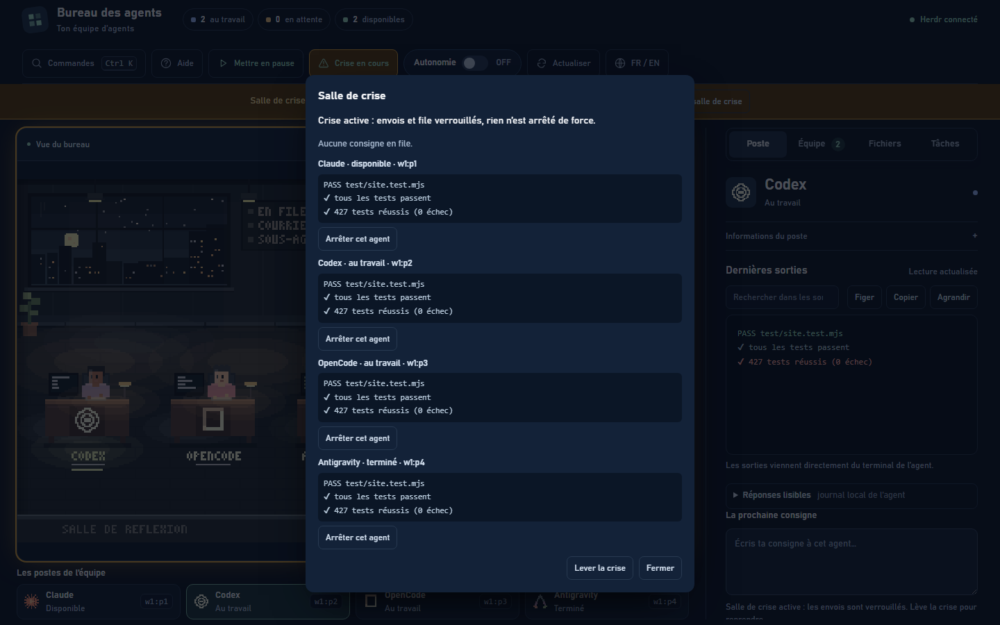
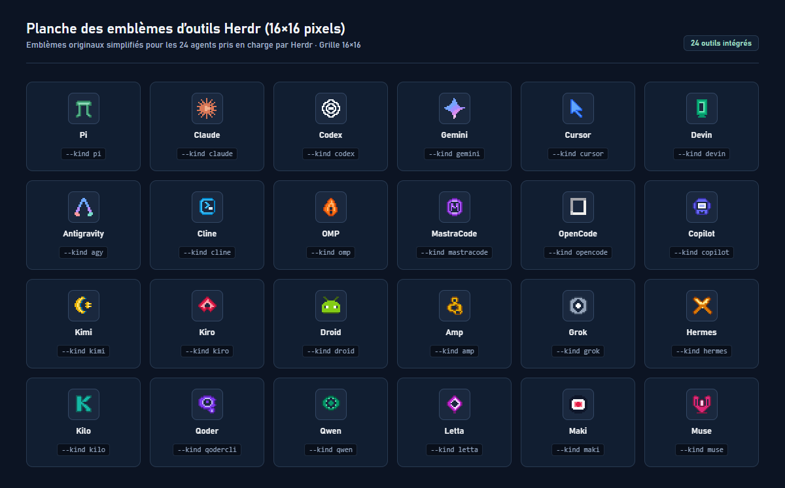
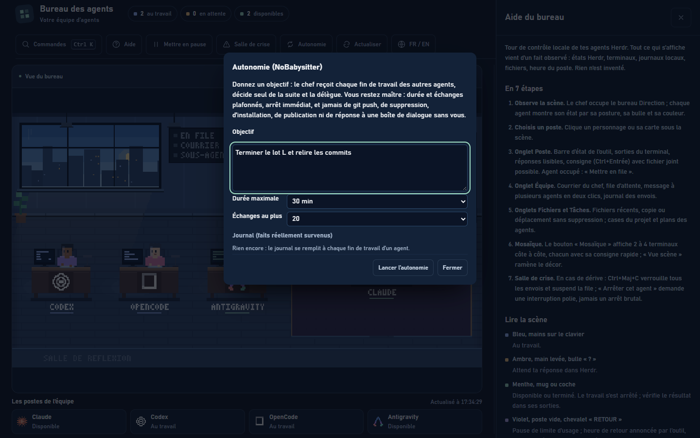
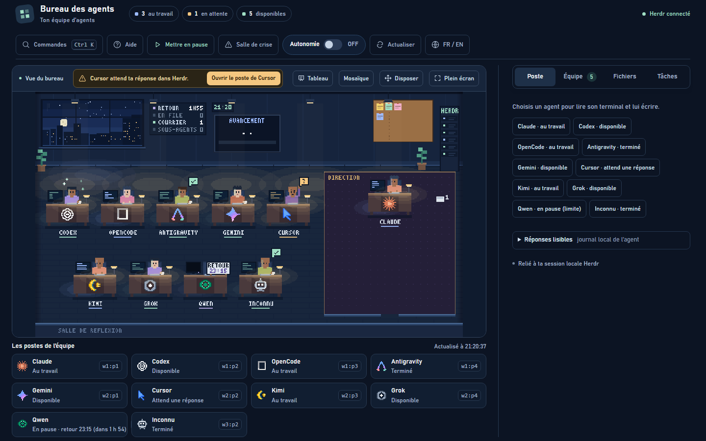

Voir qui fait quoi en direct
Chaque collaborateur a son poste de travail identifié par l'emblème pixel art de son outil. Voyez en un coup d'œil qui tape, qui attend une confirmation, qui prend une pause de quota ou qui prépare son dossier.
Un tableau de bord local immersif pour orchestrer vos équipes d'agents autonomes exécutés dans Herdr. Fini les terminaux aveugles : chaque agent a son poste, ses outils et ses dossiers visibles.
Conçu pour reprendre le contrôle visuel sur l'activité des agents sans artifice ni mensonge.
Chaque collaborateur a son poste de travail identifié par l'emblème pixel art de son outil. Voyez en un coup d'œil qui tape, qui attend une confirmation, qui prend une pause de quota ou qui prépare son dossier.
Le chef d'équipe s'assoit au bureau Direction. Dès qu'une délégation intervient dans son journal, il se lève pour apporter le dossier au collaborateur. Une file d'attente intelligente et une salle de crise sécurisent chaque envoi.
Zéro pourcentage inventé, zéro humeur fictive. Tout provient exclusivement des faits mesurés : processus Herdr réels, fichiers sur votre disque, journaux locaux et horloge de votre machine.
Chaque fonction est testée et s'appuie exclusivement sur des faits observés sur votre machine.
Vue panoramique calée sur votre horloge système : lever de soleil à 6 h 30, coucher à 19 h 30, éclairage chaleureux des lampes de bureau en soirée.
Lecture du terminal sans pollution : surlignage des erreurs et des succès, défilement fluide, recherche textuelle instantanée et saut aux résultats.
Le chef d'équipe coordonne les agents. Sur chaque délégation observée, il quitte son bureau pour remettre physiquement le dossier à son collègue.
Alerte discrète et neutre mise en file pour le chef dès qu'un collaborateur termine sa tâche, l'invitant à relire son panneau avant de lui confier la suite.
Basculez de la scène à une grille de 2 à 4 terminaux en direct avec recherche simultanée, consigne rapide et agrandissement à la demande (4 tuiles au plus, équipe testée jusqu'à 10 agents, 12 en envoi groupé).
Extraction des réponses réelles de l'agent, filtrées de tout contenu privé ou raisonnement brut, avec copie en un clic et fil de discussion complet.
Associez des documents de travail en toute sécurité. Le bureau observe les créations et modifications réelles sur disque sans jamais rien écraser.
Centralisation en temps réel des cases cochées dans TODO.md et des plans d'action publiés par les agents eux-mêmes, sans pourcentage artificiel.
Bouton protégé (Ctrl+Maj+C) pour geler immédiatement les départs de consignes en cas d'urgence et demander un arrêt poli par la touche Échap.
Règles communes (AGENTS.md), consignes du chef (CHEF.md) et mémoire collective des leçons (LESSONS.md) prêtes à être déployées dans vos projets.
Basculez à tout moment entre le français et l'anglais d'un simple clic, avec détection de la langue du navigateur et mémorisation locale.
Écoute strictement restreinte à 127.0.0.1, jeton aléatoire de session, zéro appel sortant, zéro dépendance npm, zéro secret intercepté.
Coordination en étoile où le chef décide et délègue chaque étape vers un objectif borné (durée de 5 à 120 min, 3 à 60 échanges). Arrêts de sécurité stricts sans jamais de push ni de suppression.
Des fonctionnalités concrètes, testées et observées sur votre poste.
Bascule permanente OFF / ON dans la barre supérieure affichant l'état actif et le temps restant, avec bouton Récapitulatif générant un bilan factuel au format Markdown.
Ligne de santé dans l'aide, pastille « Redémarrage à prévoir » et bouton de diagnostic copiable sans aucun chemin, secret ni message privé.
Atelier testé jusqu'à 10 agents avec disposition responsive en 3 colonnes sur téléphone (390 px) pour garder les personnages immédiatement visibles.
Capsule animée légère montrant la tournée du chef et la remise de dossier doré, et aperçu de partage Open Graph corrigé en haute fidélité.
Cliquez sur une capture pour l'agrandir en haute définition.

Le chef au bureau Direction, les postes de travail et la salle de réflexion vitrée.

Éclairage tamisé automatique dès 19 h 00 avec suspensions et lampes de bureau allumées.

Terminal interactif en direct avec filtres de couleurs et zone de consigne rapide.

Supervision de l'effectif, attribution du rôle de chef et file d'attente prioritaire.

Surveillance simultanée de plusieurs agents au travail avec recherche réactive.

Verrouillage de sécurité des envois et interruption polie sans destruction de processus.

Représentations pixel art 16x16 pour identifier chaque IA compatible Herdr.

Dialogue cadré par durée et plafond d'échanges, arrêt d'urgence et coordination par le chef.

Atelier à pleine charge avec 10 collaborateurs aux statuts variés (jusqu'à 10 agents testés, 12 en envoi groupé, mosaïque 4).
Aucun outil de compilation requis. Node.js (>= 22) et Herdr suffisent.
Récupérez le fichier ZIP de la dernière version stable sur GitHub et décompressez-le dans le dossier de votre choix.
Sous Windows, double-cliquez sur Installer MyTeam.bat. L'installeur animé démarre directement, vérifie les prérequis et prépare la grille Herdr 2x2.
Double-cliquez sur le raccourci « Herdr et bureau » créé sur votre Bureau, ou lancez node server.mjs et ouvrez votre navigateur.
Comme tout script .bat téléchargé depuis Internet sans certificat commercial payant, Windows SmartScreen peut afficher un écran bleu préventif (« Windows a protégé votre ordinateur »). Le projet est entièrement auditable et à code ouvert : cliquez sur Informations complémentaires puis Exécuter quand même, ou faites un clic droit sur le fichier .bat > Propriétés > Débloquer.
Ouvrez un terminal dans le dossier et lancez le script bash interactif :
bash scripts/installer.shClonez directement le dépôt public et démarrez :
git clone https://github.com/BlackAngel242/MyTeam.git
cd MyTeam && powershell -ExecutionPolicy Bypass -File scripts\installer.ps1MyTeam reconnaît automatiquement l'ensemble des 24 outils d'IA gérés par Herdr.
Lors de la préparation de votre grille Herdr 2x2, l'installeur teste dans votre environnement la présence de chacun des 24 outils compatibles et vous propose de les lancer panneau par panneau.
Chaque outil possède son propre emblème 16x16 sur le bureau. Claude, Codex et OpenCode bénéficient en plus d'un lecteur de journaux locaux extrayant les réponses réelles, les jetons consommés et l'historique.
Outils à télémétrie enrichie :
MyTeam est un projet libre et indépendant sous licence MIT. Les contributions sont les bienvenues.
Vous avez constaté un écart avec la vérité des faits ou une anomalie d'affichage ? Ouvrez un rapport précis.
Vous souhaitez intégrer un nouvel outil dans Herdr ou proposer une amélioration ergonomique ?
Architecture du code, zéro dépendance, validation par tests : découvrez nos règles de développement.